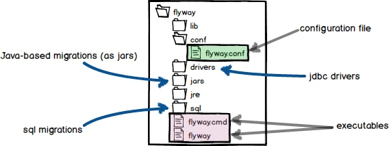

数据库版本控制工具——flyway的安装与使用
安装：
在该页面选择需要安装的包下载
https://flywaydb.org/getstarted/download
本次我们安装的是Command-line tool
只需要解压就行，解压缩目录下会有两个可执行文件flyway和flyway.cmd
配置：
目录结构如下

安装目录下的conf/flyway.conf是配置文件
你也可以在别处建立配置文件
如果在执行flyway命令时没有使用 -configFile 参数指定配置文件的话，配置文件会以以下顺序加载
/conf/flyway.conf
/flyway.conf
/flyway.conf
后面加载的配置会覆盖前面加载的配置
我们还可以使用 -X 参数，输出debug信息
使用 -q 参数，不打印输出（errors 和 warnings 除外）
使用：
flyway有6个基本命令
migrate、clean、info、validate、baseline、repair
migrate：把数据库的表结构升级到最新版。会根据你提供是SQL文件升级。SQL文件默认存储在安装路径下的sql目录（该目录可以根据 flyway.locations 参数修改）。migrate会扫描该目录下的“.sql”文件，并根据文件名获取版本和描述信息。文件名的前缀有两种“V”和“R”。“V”代表versioned，指用于版本控制的文件；“R”代表repeatable，指可以重复执行的文件。“V”后面跟版本号，版本号是用点（.）或者下划线（_）分割的数字。前缀或者版本号与描述之间用双下划线（__）分割。
clean：clean会将 flyway.schemas 中配置的数据库全部清空。
info：显示版本、描述、执行时间和状态的信息。
validate：对已经应用的migrations进行校验。
baseline：如果指定的数据库已经有表结构存在了，需要使用baseline初始化 schema_version 表的信息。
repair：修复 schema_version 表。
说明：
Versioned migrations 和 Repeatable migrations。即前缀为“V”和“R”的migrations。Versioned migrations是将自身的版本号和schema_version的最新版本号比较来决定是否执行的，Versioned migrations的版本号比schema_version的最新版本号高的将执行。Repeatable migrations则是和schema_version中的checksum进行比较，如果脚本名称和checksum值都相同，则不执行。
不足：
不支持回滚
flyway更适合单一服务的版本迭代，如果是多个服务并行开发，甚至在上线前都无法确定哪些服务需要上线，flyway的版本控制则会制约数据库的版本迭代
使用gh-ost进行在线表结构修改
gh-ost是github开源的一款在线表结构修改工具，能够在不锁表的情况下修改表结构。
和percona的pt-osc一样，修改表结构的流程也是，新建一张表，修改表结构，同步源表的数据，将两张表改名，用新表替换旧表。至此，完成在线修改表结构。
与pt-osc不同的是，pt-osc使用的是触发器来维护在数据同步过程中旧表数据的改动，并将这些改动映射到新表。而在gh-ost中则使用的是binlog的方式。
使用binlog比使用触发器的有点主要在于：
维护触发器的开销比较大，这个开销包括触发器在执行时代码的开销和锁的开销。而使用binlog的开销更小。
一旦使用了触发器就无法暂停。而使用binlog的方式则更灵活，在同步的过程中可以暂停，还可以调整一些参数。
下面是一个gh-ost使用的例子：
./gh-ost -throttle-control-replicas='10.10.0.1:3306' -host '10.60.0.124' -port '3306' -user 'admin' -password '123456' -database 'testdb' -table 'testtable' -verbose -alter "CHANGE score score FLOAT(5,2) NOT NULL DEFAULT '0.00' COMMENT '比分'" -execute
其中
-throttle-control-replicas 列出了一个以逗号分隔的从库列表，gh-ost会根据该列表去检查从库的延时，当延时过大（默认1500s）时会暂停。
-host 默认填写的是从库ip，gh-ost会根据从库自动找到主库，这里使用从库ip是因为gh-ost默认是从从库读取数据写到主库的，这样可以减小主库的压力，如果这里填写了主库的ip，需要在后面附加上-allow-on-master选项，这样就可以从主库读数据并写到主库了。
-verbose 运行时输出详细信息
-alter 表结构修改语句的主体部分
-execute 执行操作，如果不加的话，会打印整个流程，但不会执行
以上是一个简单的用法和一些基本的参数说明。
github地址：https://github.com/github/gh-ost
Copyright © 2015 Powered by MWeb, Theme used GitHub CSS.